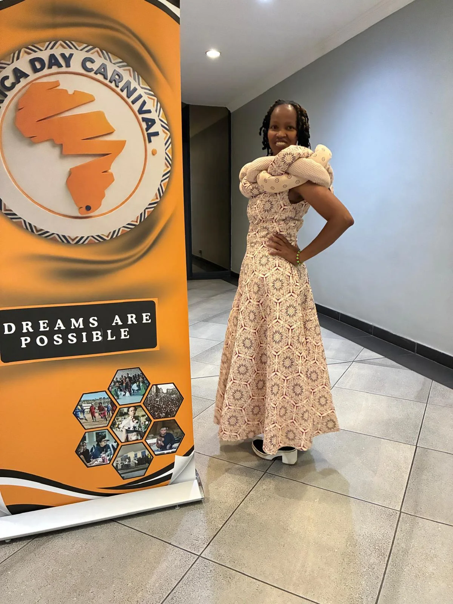
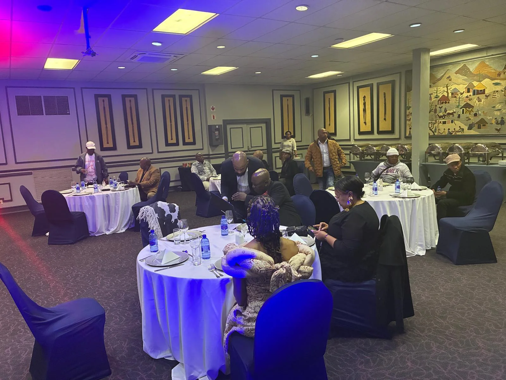
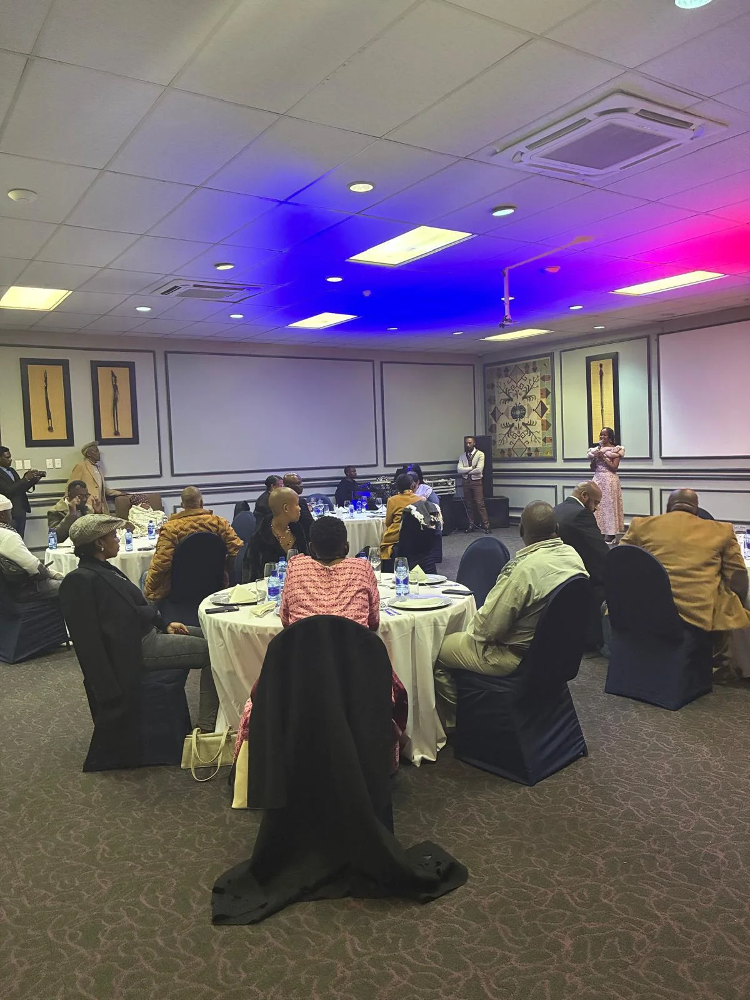

Celebrate
Make room for the diversity of African languages, traditions, arts and lived experience.
A cultural platform for Africa & its diaspora
Africa Day brings people together through language, storytelling, music, creativity and community. We celebrate who we are while building ways for the next generation to carry our heritage forward.


A platform with purpose
Culture is not only what we inherit. It is what we choose to protect, practise and pass on.
Africa Day is a meeting place for languages, knowledge, creativity and shared histories. Through public celebrations and practical programmes, the platform creates space for communities to celebrate their identities and for young people to see cultural heritage as a resource for the future.
Discover our purpose ↗Make room for the diversity of African languages, traditions, arts and lived experience.
Record oral histories, stories and local knowledge for future generations.
Connect culture with education, digital skills, creativity, agriculture and sport.
Bring communities, institutions and the African diaspora into cultural exchange.

From gathering to legacyThe 2027 flagship edition
In 2027, Africa Day turns its focus to Lesotho’s 60-year milestone. The six-day programme brings together arts, business, languages, education, sport and family, with a longer-term ambition to preserve oral storytelling in a digital archive.
What brings us together
Explore the programmes and ideas at the heart of Africa Day — from oral histories and education to creative enterprise and community celebration.
Connect learners and elders through storytelling, school gardens, podcasts and cultural-sport activities.
↗02 / CELEBRATIONSix days of events in Maseru, 25–30 May 2027, marking a national milestone through culture.
↗03 / COLLABORATIONWork with the platform to support cultural heritage, learning, artists and community participation.
↗